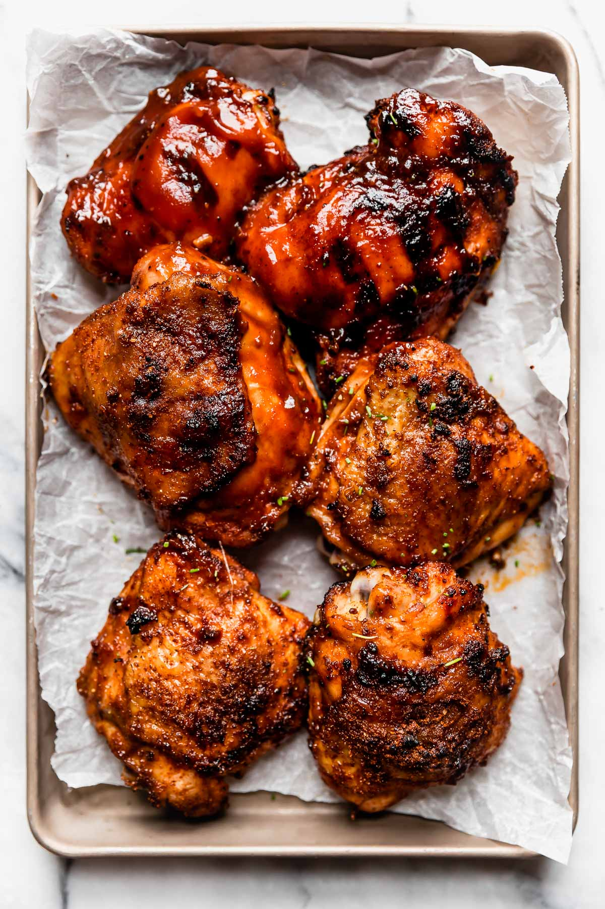

BBQ Chicken

Description
A not-too-sweet, not-too-tangy barbecue sauce that
everyone loves. Finishes in almost a glaze and would
also be great on pork chops or ribs.
Ingredients:
- 1 1/2 tablespoons of olive oil
- 1/4 cup diced onion
- 2 gloves garlic, minced
- 5 tablespoons ketchup
- 3 tablespoons honey
- 3 tablespoons brown sugar
- 2 tablespoons apple cider vinegar
- 1 tablespoon Worcestershire sauce
- salt and pepper to taste
- skinless, boneless chicken breast halves
Steps:
- Preheat grill for medium-high heat
- Heat olive oil in a skillet over medium heat.
Saute onion and garlic until tender. Stir in
ketchup, honey, brown sugar, apple cider vinegar,
Worcestershire sauce, salt, and pepper. Cook for
a few minutes to thicken sauce. Remove from heat,
and allow to cool.
- Lightly oilthe grate. Dip chicken in sauce,
and turn to coat. Cook on grill for 10 to 15
minutes, turning once. Move chicken to the skillet
with sauce. Simmer over medium heat for about
5 minutes on each side.